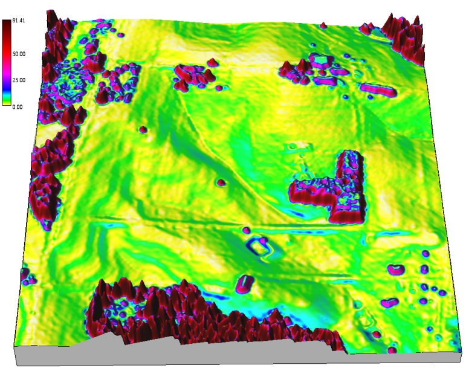
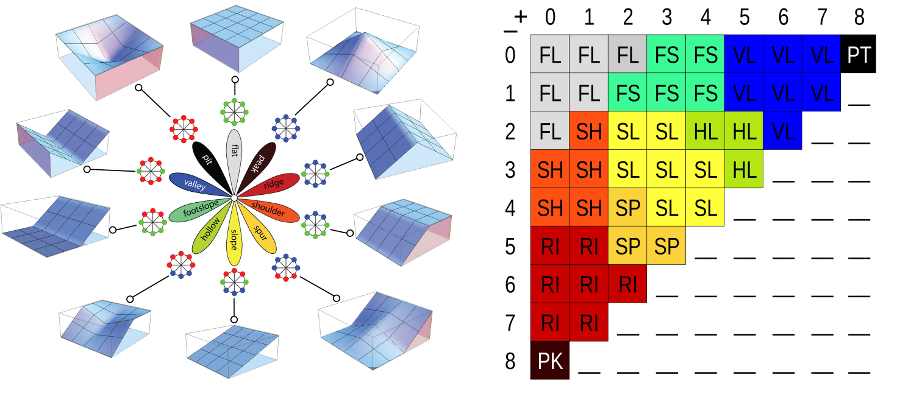

Geomorphometry II:
Basic topographic analysis
Helena Mitasova
Outline (learning objectives)
- summary parameters: volumes, surface areas
- first and second order point parameters
- methods for slope, aspect and curvatures using polynomial and spline approximation
- computing parameters from noisy data, level of detail
- combining parameters to map landforms
- DEM time series
Terrain surface parameters
- Derived from discrete representation of $z=f(x,y)$
- Summary parameters
quantify property for entire surface or its subregion: volume, surface area, fractal dimension, roughness
- Point geometry parameters quantify geometry at each point of the surface: gradient, curvatures
- Process-based parameters quantify cumulative results of processes (flow, solar radiation, wetness)
Volume estimation
- Volume - integral approximated as sum of cuboids:
$$
V=∑dx.dy.dz = dx.dy ∑ dz
$$
- where $dx.dy$ is grid cell area, $dz = z_0-z_i$, is cell value difference, $z_0$ is constant, plane or curved surface
- computed as sum of grid cell values
- can be applied as global or zonal metrics
Surface area
- sum of 3D triangle areas, depending on the direction of the diagonal: minimum and maximum surface
- alternative: 8 triangles connecting grid center with neighboring ones
- larger than 2D area

Point topographic parameters
Measure geometric properties at any point of the elevation surface
- steepness, orientation, and shape
- derivation based on differential geometry
- computed from raster DEM
- computed directly from scattered points using interpolation function with suitable properties
Elevation surface gradient
Given a surface $z = f(x,y)$, where $f(x,y)$ is a continuous bivariate function,
we can define a gradient:
$$
\nabla z = ({\partial z \over \partial x}, {\partial z \over \partial y}) = (f_x,f_y)
$$
where $f_x$ and $f_y$ are first order partial derivatives of $f(x,y)$
vector field that represents the maximum rate of change in elevation
and points in the direction of this change
What is partial derivative and a
formal definition and
why it is direction of steepest ascent
Gradient vector field
$$
\nabla z = - (f_x,f_y)
$$

gradient vectors are perpendicular to contours
Steepest slope angle
Given the surface gradient $\nabla z = (f_x,f_y)$,
the steepest slope magnitude $s[\%]$ is the gradient vector magnitude
$$ s = 100 \sqrt {f_x^2 + f_y^2} $$
and the steepest slope angle $\gamma$ is
$$ \tan \gamma = \sqrt{f_x^2 + f_y^2} $$
- angle between horizontal plane and surface tangent
- rise over run in direction of max elevation change
keep in mind that
$$ (f_x,f_y)=({\partial z \over \partial x}, {\partial z \over \partial y})$$
Steepest slope angle map
$$ \gamma = \arctan \sqrt {f_x^2 + f_y^2} $$

- values range between 0 - 90 degrees
- controls flow velocity and sun inclination angle
Aspect angle
Steepest slope direction angle is given by the direction of gradient vector
$$ \tan \alpha = {f_y \over f_x} $$
- values range between 0 - 360 degrees
- signs of $f_x, f_y$ need to be considered to determine the angle in relation to
the $0^{\circ}$ direction (E or N)
- measures hillslope orientation
- controls flow direction and sun inclination angle
when only $f_x = 0, \tan \alpha = \inf$ and $\alpha = 90 degrees$, but when $f_x = f_y = 0$ then $\alpha$ is undefined
Aspect angle map
$$ \tan \alpha = f_y / f_x $$
Slope angle in a given direction
Slope $\gamma_t$ measured at a direction $\alpha_t$ is given as:
$$ \tan \gamma_t = \tan \gamma \cos(\alpha - \alpha_t) $$
- where $\gamma$ is the steepest slope angle.
- $\alpha$ is the steepest slope direction
Slope angle $\gamma_t$ is always smaller than $\gamma$
Directional derivative: ${\partial z \over \partial s} = f_x \cos \alpha_t + f_y \sin \alpha_t$
Slope along a bus line
Elevation contours, steepest slope map, bus route
Arrows show steepest slope direction (red) and direction of route (purple)
Slope angle in the route direction
Steepest slope angle and slope angle in the direction of bus route
Steepest slope and aspect from DEM
Methods to estimate slope and aspect from a DEM:
- Maximum elevation difference: D8 approach
- Polynomial approximation on 3x3 neighborhood, many versions using second order polynomials
- Spline approximation directly from point data
In following slides we refer to steepest slope as slope
Slope and aspect from DEM
Polynomial approximation on 3x3 moving window:
$$ z = f(x,y)=a_0+a_1 x + a_2 y + a_3 xy + a_4 x^2 + a_5 y^2 $$
- we can write 9 equations to solve for $a_i$ parameters
- more equations than needed - we use weighted least squares to fit the polynomial to the 9 grid points
Slope and aspect from DEM
After substitution for $a_i$ where $f_x=a_1, f_y=a_2$:
$$ f_x = \left [z_{i-1,j-1} - z_{i+1,j-1} + 2(z_{i-1,j} - z_{i+1,j}) + z_{i-1,j+1} -z_{i+1,j+1} \right ] / 8 \Delta x $$
$$ f_y = \left [z_{i-1,j-1} - z_{i-1,j+1} + 2(z_{i,j-1} - z_{i,j+1}) + z_{i+1,j-1} -z_{i+1,j+1} \right ] / 8 \Delta y $$
Then slope and aspect is $ \tan \gamma = \sqrt{f_x^2 + f_y^2}, \tan \alpha = f_y / f_x$
Slope and aspect: DEM
Slope and aspect derived from a 10m resolution DTM
Slope and aspect: integer DEM
Impact of integer elevation values in meters on slope pattern
and slope and aspect histograms
Shape metrics: curvatures
Curvature at a point: inverse of the radius of a circle tangent to a curve $[m^{-1}]$
Blue: Concave, Orange: Convex.
High curvature value is associated with smaller circle
Surface curvatures
- In general, surface has different curvatures in different directions
- Principal curvatures: maximum and minimum curvatures $\kappa_1, \kappa_2$
at a point, in perpendicular directions
- Mean and Gaussian curvatures: $\kappa_M = (\kappa_1 + \kappa_2) /\, 2, \kappa_G = (\kappa_1 \kappa_2) /\, 2$
- Geomorphometric curvatures are related to processes: profile, tangential / plan
Profile curvature
- measured in the direction of gradient - along the flowline
- measures rate of change in slope
- convex: increasing slope - flow acceleration
- concave: decreasing slope - flow deceleration
Tangential and plan curvatures
- measured in the direction perpendicular to gradient, in the direction of a tangent to contourline
- measures rate of change in aspect, curvature of contours
- convex: flow divergence
- concave: flow convergence
Curvatures equations
Given a surface $z = f(x,y)$, we compute the geomorphometric curvatures as follows:
$$
\kappa_p= (f_{xx} f_x^2 + 2f_{xy} f_x f_y + f_{yy} f_y^2 ) / p \sqrt{q^3}
$$
$$
\kappa_t= (f_{xx} f_y^2 - 2f_{xy} f_x f_y + f_{yy} f_x^2 ) / p \sqrt{q}
$$
- $\kappa_p$ is the profile curvature, $\kappa_t$ is the tangential curvature,
- $p=f_x^2+f_y^2$ and $q = p+1$
- $f_{xx}, f_{yy}, f_{xy}$ are second order partial derivatives of $f(x,y)$
(differences of differences)
Curvatures from DEM
Methods to estimate curvatures from a DEM:
- Configuration of elevation differences
- Polynomial approximation on 3x3 neighborhood, many versions using second order polynomials
- Spline approximation directly from point data
Curvatures from DEM
Polynomial approximation on 3x3 moving window:
$$ z = f(x,y)=a_0+a_1 x + a_2 y + a_3 xy + a_4 x^2 + a_5 y^2 $$
- we use weighted least squares to fit the polynomial
- we estimate $f_x, f_y, f_{xx}, f_{yy}, f_{xy}$ using weighted elevation differences
and differences of differences
- we copmute the curvatures using equations for $\kappa_p, \kappa_t$
Curvature maps
Profile and tangential curvatures computed from 10m resolution DEM
Topographic parameters from points
Given a set of scattered points $(x_i,y_i,z_i)$, $i=1,...,n$ estimate slope, aspect, and curvatures:
- Partial derivatives of a suitable spline function, usually simultaneously with interpolation
- More than 100 points may be used to compute the function - larger forms can be analyzed
H.Mitasova, H., Mitas, L. and Harmon, R.S., 2005, Simultaneous spline interpolation and topographic analysis for lidar elevation data: methods for Open source GIS, IEEE GRSL 2(4), pp. 375- 379.
Slope and aspect from points
Slope and aspect derived from lidar 1st return point cloud using RST method
(smoothing spline with tension)


Topographic parameters are computed simultaneously with DEM interpolation
Curvatures from points
Profile and tangential curvatures derived from lidar 1st return points using RST method

Impact of tension on curvature
Tangential curvature computed using RST with high and lower tension
Impact of tension on slope and curvature
Impact of tension on slope and curvature

Basic Landforms
- Peak: $\nabla z = 0$ and $\kappa_p, \kappa_t$ is convex-convex
- Pit: $\nabla z = 0$ and $\kappa_p, \kappa_t$ is concave-concave
- Saddle: $\nabla z = 0$ and $\kappa_p$ is convex, $\kappa_t$ is concave
- Ridge: $\nabla z \neq 0$ and $\kappa_t$ is convex
- Valley: $\nabla z \neq 0$ and $\kappa_t$ is concave

Basic Landforms map
Impact of moving window size on landform mapping
(1m resolution DEM, 9x9, 45x45 window)

Geomorphons
Line of sight based method for mapping basic landforms

Multiscale properties controlled by the range of view rather than moving window:
Jasiewicz, J., Stepinski, T., 2013, Geomorphons - a pattern recognition approach
to classification and mapping of landforms, Geomorphology, vol. 182, 147-156
Geomorphons
Landforms for the entire US using a 30m resolution NED:

Jasiewicz, J., Stepinski, T., 2013, Geomorphons - a pattern recognition approach
to classification and mapping of landforms, Geomorphology, vol. 182, 147-156
(DOI: 10.1016/j.geomorph.2012.11.005)
Multitemporal DEMs: analysis
Given $n$ DEM snaphots $z(i,j,t_k) \quad k=1, ..., n$, per-cell operation can be used to derive:
- Core surface: $z_{core}(i,j)=\min_k z(i,j,t_k) \quad k=1, ..., n$
- Envelope surface: $z_{env}(i,j)=\max_k z(i,j,t_k) \quad k=1, ..., n$
- Time of max: $t_{max} (i,j) = t_l, \quad {\rm where} \quad z(i,j,t_l) = z_{env}(i,j) $
- Time of min: $t_{min} (i,j) = t_p, \quad {\rm where} \quad z(i,j,t_p) = z_{core}(i,j)$
Core surface is the minimum elevation and envelope surface as the maximum elevation measured at each cell over the given time period,
core defines the volume of sand that has not moved.
Mitasova, H., et al. 2009, New spatial measures of terrain dynamics derived from time series of lidar data, Proc. 17th Int. Conf. Geoinformatics, Fairfax, VA.
Multitemporal DEMs: analysis
Nags Head: core, envelope, time of maximum
Multitemporal DEMs: analysis
Discrete changes and a continuous rate of change
- Building lost or new: $z_{env}(i_c,j_c) - z_{core}(i_c,j_c) > h_b$
- Lost structure: $t_{max} (i_l,j_l) < t_{min} (i_l,j_l)$
- New structure: $t_{max} (i_l,j_l) > t_{min} (i_l,j_l)$
- Per-cell linear regression slope measures rate of continuous change
Multitemporal DEMs: analysis
Nags Head: buildings, shoreline band,
rate of elevation change (regression slope)


Multitemporal DEMs: visualization
Jockey's Ridge 1974 - 2018


Evolution of a 16m contour extracted as isosurface from space-time cube
Summary
- summary parameters: volumes as sum of $\Delta z$, surface areas can be much larger that horizontal area
- first and second order point parameters: slope, aspect and curvatures
can be estimated using polynomial or spline approximation
- noisy data, level of detail influence the spatial pattern of topographic parameters
- topographic parameters can be combined to map basic landform shapes
- per-cell operations can be used to extract metrics of topographic change